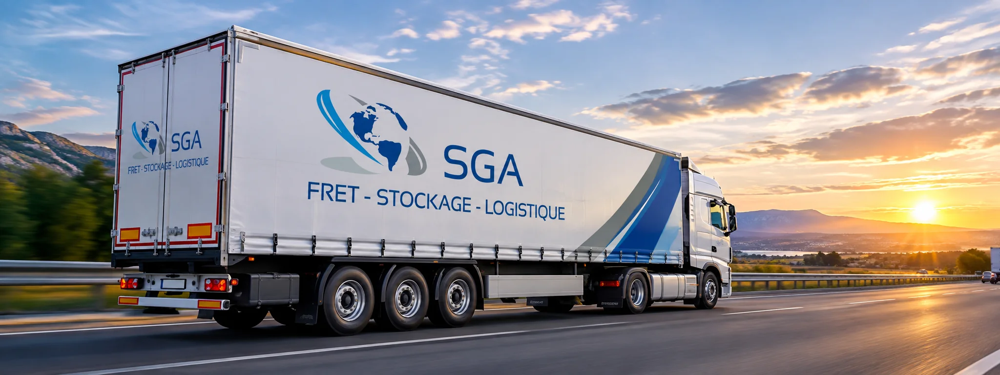

Affrètement routier en France et en Europe
SGA Groupe est une entreprise d'affrètement : vous nous confiez votre marchandise, nous organisons le transport avec le transporteur le mieux adapté, avec un interlocuteur dédié du premier appel à la livraison.

Qu'est-ce que l'affrètement routier ?
L'affrètement routier consiste à confier l'organisation d'un transport de marchandises à un affréteur. Celui-ci sélectionne le transporteur, planifie la mission et en assure le suivi. Pour l'expéditeur, c'est la possibilité de disposer de la bonne capacité de transport au bon moment, sans gérer lui-même une flotte ni chercher un transporteur à chaque expédition.
C'est exactement le métier de SGA : organiser votre transport, en lots complets ou en demi-lots, sur toute la France et en Europe.
Ce que SGA prend en charge
- Le choix du transporteur dans un réseau de plus de 4 000 transporteurs sélectionnés, pour répondre à chaque marchandise et à chaque trajet.
- Lots complets ou demi-lots, selon le volume à transporter.
- Le bon véhicule : tautliner, plateau, fourgon ou camion, avec ou sans hayon.
- Le suivi de la mission par un interlocuteur dédié, pas par un centre d'appels.
- Un devis rapide : réponse sous 30 minutes après votre demande.
Quand faire appel à un affréteur routier ?
L'affrètement est particulièrement utile lorsque votre besoin varie : pic d'activité, expédition ponctuelle, délai serré, trajet vers un pays que vous ne desservez pas habituellement ou marchandise hors norme. Plutôt que d'immobiliser des moyens en permanence, vous activez une solution de transport adaptée, uniquement quand vous en avez besoin.
Pour les besoins qui dépassent la route, découvrez aussi notre offre de transport national et international (routier, ferroviaire, maritime et aérien) et nos solutions de stockage et de logistique.
Comment ça marche ?
- Vous décrivez votre besoinCoordonnées, trajet, marchandise et véhicule : le formulaire se remplit en moins de 2 minutes.
- Nous revenons vers vousNotre équipe vous répond sous 30 minutes avec une solution de transport adaptée.
- Nous organisons et suivonsUn interlocuteur dédié coordonne le transport, du premier appel jusqu'à la livraison.
Les informations utiles pour un devis précis
Plus votre demande est précise, plus notre réponse l'est aussi. Le formulaire de devis vous guide, et il suffit de renseigner :
- la ville et le code postal de départ et d'arrivée, en France ou en Europe ;
- le type de marchandise : palette Europe (120 × 80 cm), palette industrielle (120 × 100 cm) ou format hors norme, avec le nombre d'unités ;
- le poids de la marchandise, par palette ou au total ;
- le caractère gerbable ou non gerbable de la marchandise ;
- le type de véhicule souhaité et, si besoin, un hayon au départ, à l'arrivée ou aux deux.
Questions fréquentes
Quelle est la différence entre un affréteur et un transporteur ?
Le transporteur réalise physiquement le transport avec ses véhicules. L'affréteur organise et coordonne le transport pour le compte de son client : il sélectionne le transporteur adapté, planifie la mission et assure le suivi.
Quels types de véhicules sont disponibles ?
Grâce à son réseau de transporteurs, SGA peut proposer des tautliners, des plateaux et des fourgons ou camions, avec ou sans hayon. Le formulaire de devis permet de préciser votre besoin.
Puis-je demander un hayon ?
Oui. Lors de votre demande de devis, vous pouvez indiquer qu'un hayon est nécessaire au départ, à l'arrivée, ou aux deux.
En combien de temps recevrai-je une réponse ?
Notre équipe revient vers vous sous 30 minutes après votre demande de devis. Pour une urgence, vous pouvez aussi nous appeler au 07 64 19 10 17.
À découvrir aussi
Transport national & international
Transport de marchandises en France et en Europe par la route, le rail, la mer ou les airs. SGA Groupe choisit le bon mode et organise votre…
En savoir plusStockage & logistique
Solutions de stockage flexibles et pilotage de vos flux logistiques : SGA Groupe vous aide à absorber vos pics d'activité et à fluidifier votre…
En savoir plusQuestions fréquentes
Les réponses aux questions que nous posent le plus souvent nos clients sur l'affrètement, le devis et l'organisation de leurs transports.
En savoir plusPrêt à optimiser votre transport ?
Un devis clair, une équipe réactive, un interlocuteur dédié à chaque étape.